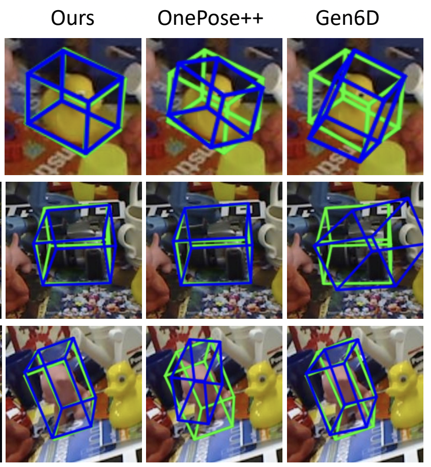
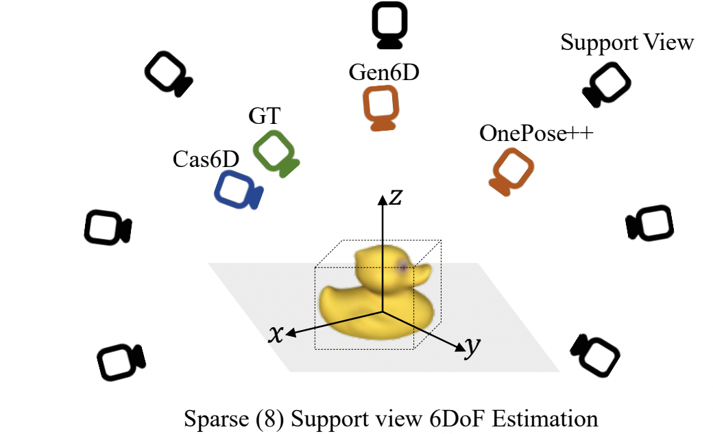

|
I am currently employed as a Researcher and Developer at Pico Architecture Group within ByteDance Ltd. Previously, I held the position of Senior Algorithm Engineer at Alibaba Cloud, where I specialized in 3D Face Reconstruction and 6DoF Pose Estimation. In 2019, I earned my Master's degree from Xiamen University, where I was enrolled in the prestigious Key Laboratory of Underwater Acoustic Communication, within the School of Informatics. My research interests primarily lie at the intersection of Efficient Deep Learning(Quantization & Reparameterization) and 3D Computer Vision (Vision and depth sensor-based 3D reconstruction, understanding and manipulation). |
|
[07/2023] One paper accepted to ICCV 2023. |
|
|
|


|
Panwang Pan*, Zhiwen Fan*, Brandon Y. Feng, Peihao Wang, Chenxin Li, Zhangyang Wang [Paper] [Project] [Code] 

By discretizing the pose search range using multiple pose bins and progressively narrowing the pose search range in each stage using predictions from the previous stage, Cas6D can overcome the large gap between pose candidates and ground truth poses, which is a common failure mode in sparse-view scenarios. |
 |
Zhiwen Fan*, Panwang Pan*, Peihao Wang, Yifan Jiang , Dejia Xu, Hanwen Jiang, Zhangyang Wang [Paper] [Project] [Code] 

We introduce Promptable Object Pose Estimator (POPE), a zero-shot framework for estimating the 6DoF pose of objects in any target image, leveraging a single reference such as a cropped image or a sketch. |
 
|
Chenxin Li*, Brandon Y. Feng*, Zhiwen Fan*, Panwang Pan, Zhangyang Wang [Paper] [Project] [Code] 

StegaNeRF achieves reliable recovery of hidden information with minimal impact on the NeRF rendering quality. This work offers a promising outlook on ownership identification in NeRF and calls for more attention and effort on related problems. |
|
|
| ByteDance Ltd, Beijing, China, Senior Computer Vision Algorithm Engineer. | 08/2022 - Present |
|
Alibaba Cloud, Hangzhou, China, Senior Computer Vision Algorithm Engineer advised by Yimin Long, Lulu Hu and HongTao Duan. |
07/2019 - 07/2022 |
|
DevTech Compute, NVIDIA, Beijing, China,
AI Developer Technology Engineer Intern advised by Xipeng Li . |
07/2018 - 10/2018 |
|
2019, Outstanding Graduates of Xiamen University 2018, National Scholarship for Postgraduates 2018, First Prize of Graduate Electronics Design Contest(GEDC) 2018, Second Prize of MCM & CPIPC |